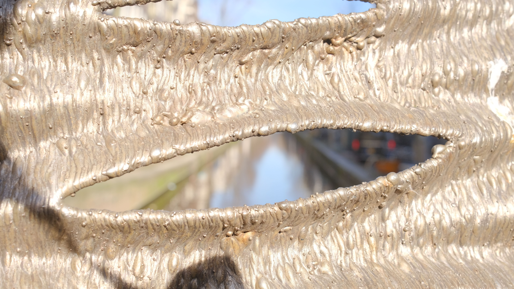

The MX3D Bridge was placed in a tent for load testing.
Location: University of Twente, the Netherlands

Bottom view of the bridge with exposed data acquisition modules and cables of the permanent sensor network.
Location: University of Twente, the Netherlands

The structure was left outside for 2 months during which the sensor network recorded its response.
Location: University of Twente, the Netherlands

The opening ceremony of the MX3D Bridge led by Queen Maxima.
Location: Amsterdam, the Netherlands

The structure was exposed to varying environmental conditions during its operation.
Location: Amsterdam, the Netherlands

Photographing the full structure.
Location: Amsterdam, the Netherlands

Details of the capabilites of metal 3D-printing.
Location: Amsterdam, the Netherlands

A proud PhD student.
Location: Amsterdam, the Netherlands

At the 'Smarter Bridge' team conference in May 2022, Craig and I performed operational loading tests.
Location: Amsterdam, the Netherlands

And we convinced others to also take part..
Location: Amsterdam, the Netherlands